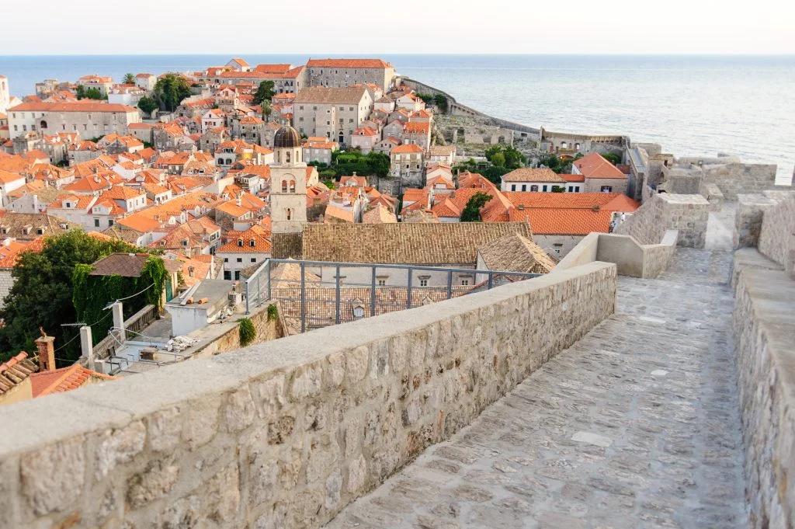
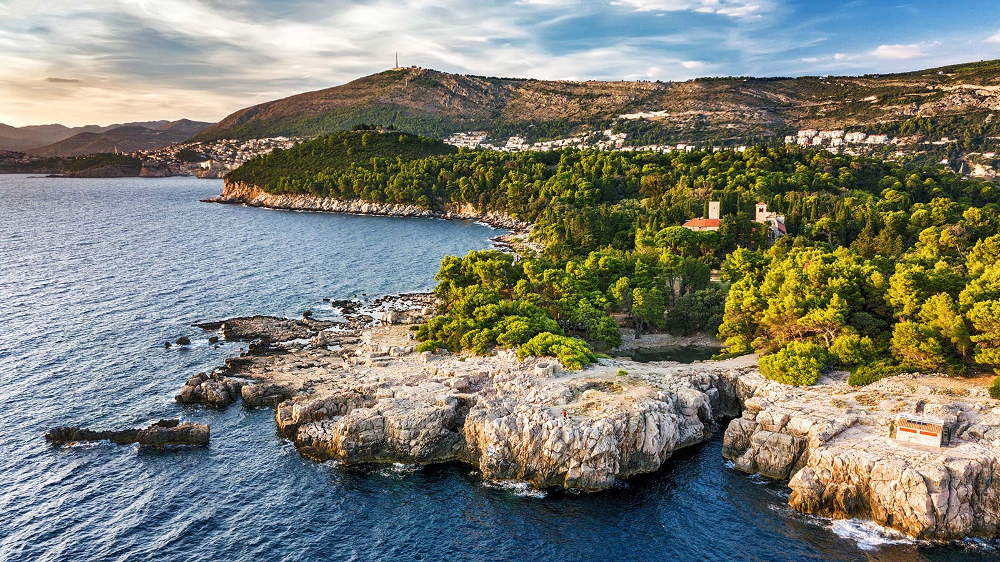
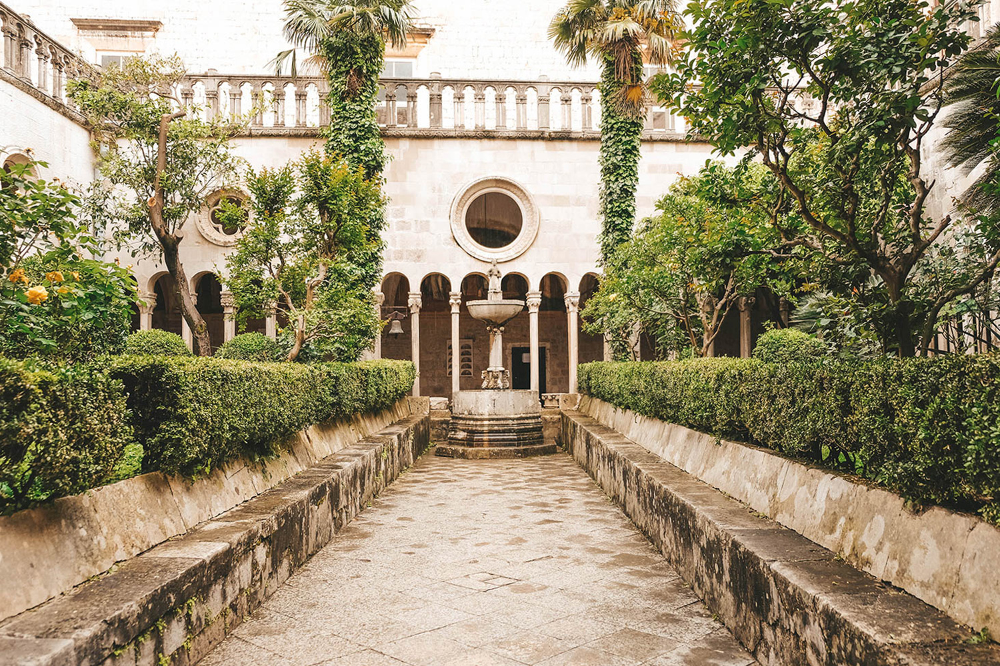
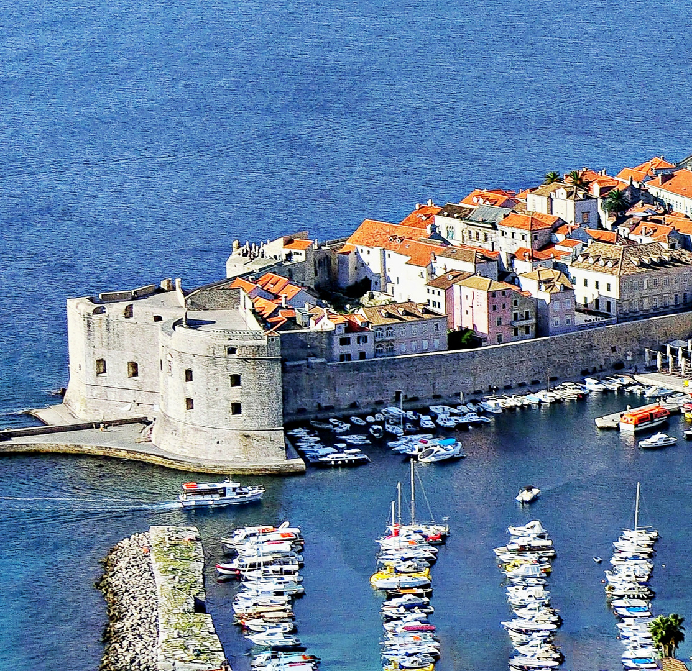

Endomagée par la guerre civile, Dubrovnik s’est bien reconstruite après les dégâts subis pendant le conflit des années 90 et les touristes affluent de nouveau dans cette ville calme et paisible.
Nichée entre l’Adriatique et les Alpes dinariques, Dubrovnik, ville facilement accessible et abordable, attire beaucoup d’Européens pour une escapade citadine.
La vieille ville en particulier, entièrement piétonnière, a beaucoup de charme.

Les remparts de Dubrovnik
Les murailles de Dubrovnik sont une série de solides murs défensifs en béton autour de l’ancienne ville de Dubrovnik, dans le sud de la Croatie. Ces murs ont été construits aux dixième et quinzième siècles,
à l’époque médiévale. Le mur est fait de différents types de pierres dures qui sont appliquées en différentes couleurs et finitions. Les remparts sont considérés comme l’une des constructions les plus impressionnantes de l’époque.
Dubrovnik s’impose aux touristes comme forteresse et affiche ses superbes vestiges du Moyen-Age qui ont su malgré de nombreuses convoitises su résister aux conquêtes et aux guerres

Lokrum Island
Lokrum se situe à seulement 600m de Dubrovnik, avec un ferry partant plusieurs fois par jour. Promenez-vous dans les jardins botaniques ou partez à la découverte du monastère médiéval bénédictin. Les plages sont rocheuses,
mais la vue des anciennes murailles de Dubrovnik est formidable. Prenez un pique-nique à l’heure du repas.

Monastères franciscain et dominicain
Les monastères franciscain et dominicain sont de vrais joyaux d’architecture romane et gothique. Bâtis aux deux portes de la ville : le franciscain à l’ouest,
le dominicain à l’est. Visitez le magnifique cloître du monastères des franciscains et sa pharmacie (du 1317),
la seule de l’Europe qui fonctionne encore aujourd’hui. Le monastère dominicain vous montre des magnifiques tableaux.

Le vieux port
Un lieu intéressant pour contempler l’Adriatique, les bateaux qui partent vers l’île de Lokrum,
Cavtat ou les îles Élaphites. On peut voir des habitants de la ville de Dubrovnik en train de parler,
vous pouvez vous asseoir à côté d’eux dans des bans en pierre. Ou prendre un verre dans une terrasse.